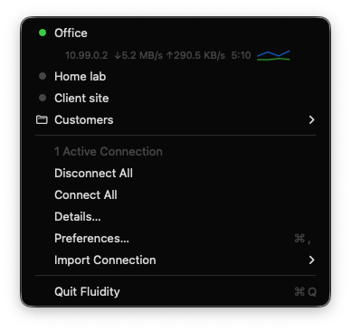
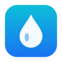
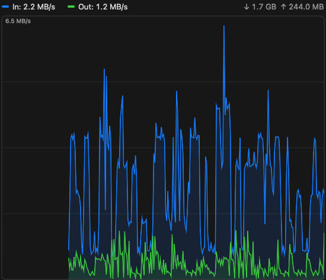
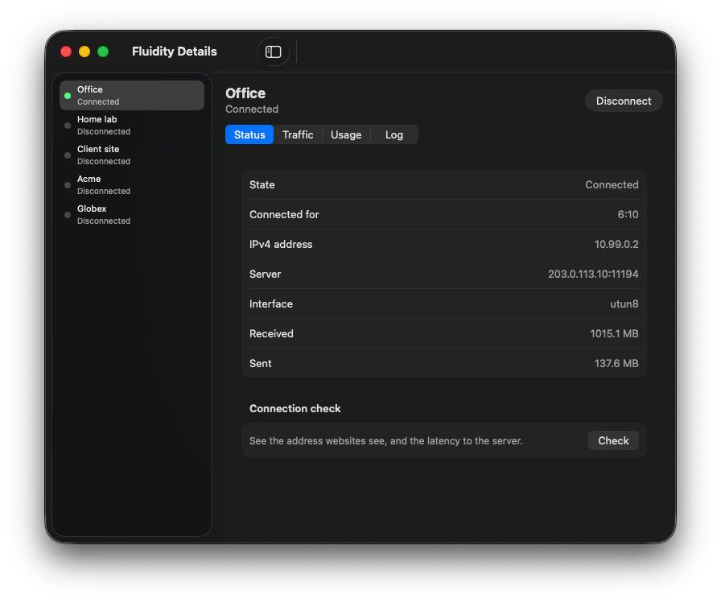
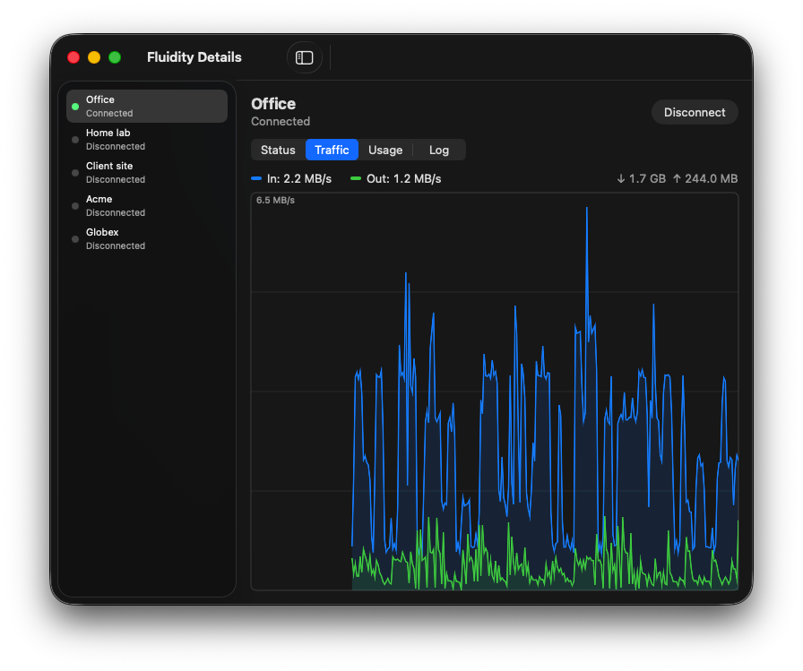
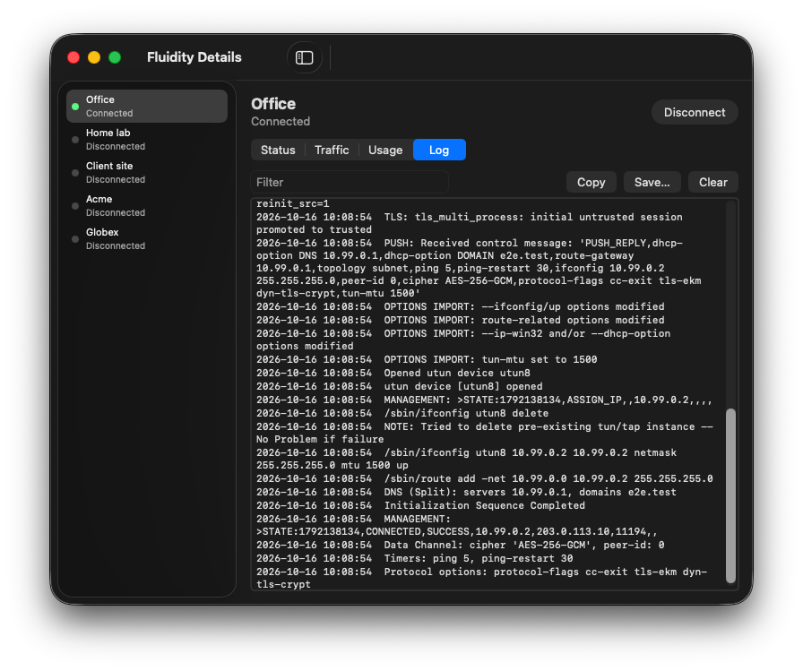
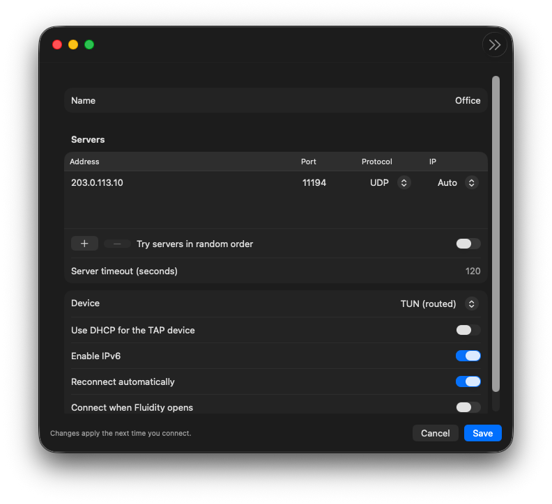
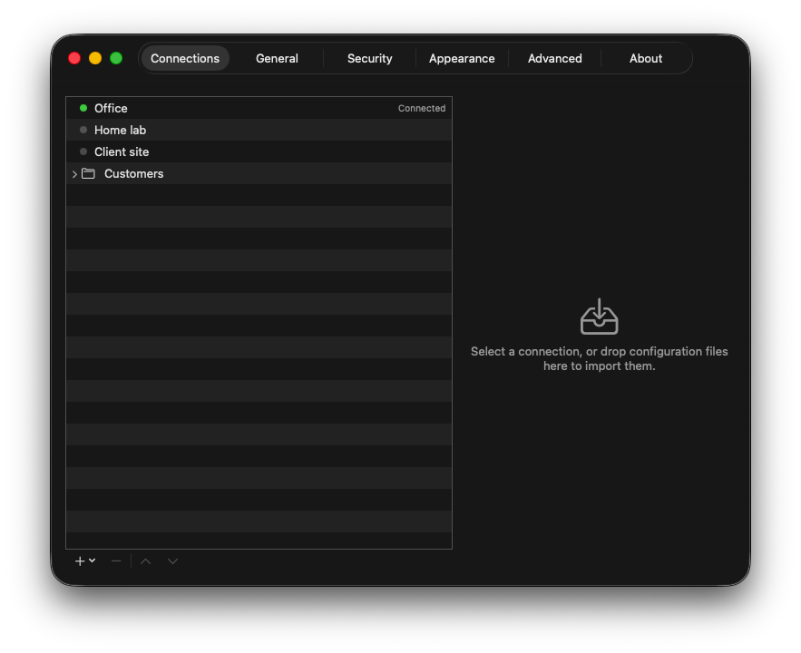

One click to connect
Your connections in one short list in the menu bar or system tray. Click a name to connect. Run several at once.


Fluidity DownloadOpenVPN client for macOS, Windows and Linux
Fluidity is an OpenVPN client that lives in your menu bar. Open the file your workplace or provider sent you, click its name, and you are on the network.
A free and open source alternative to VPN clients like Viscosity.
Opens the files you already have
Features
Your connections in one short list in the menu bar or system tray. Click a name to connect. Run several at once.

Nothing leaves your computer outside the VPN, even when the tunnel drops. Printers and local devices stay reachable if you want.
Connects by itself on networks you have not trusted. Disconnects when you get home.
Live graphs, totals and 30 days of data usage for every connection.
This graph is from a real session.

Passwords in your system keychain, one-time codes, web sign-in, certificates, smart cards and tokens.
Full or split DNS. Your normal settings come back when a connection ends, even after a crash.
Reconnects when the network returns and when your computer wakes up.
obfs4 obfuscation and HTTP or SOCKS proxies for networks that block VPN traffic.
A fluidity command, fluidity:// links, scripts on connect and AppleScript on the Mac.
$ fluidity list Office Connected Home lab Disconnected Client site Disconnected Customers/ Acme Disconnected Globex Disconnected
Details
The details window shows what is happening right now: addresses, the server, the interface, the traffic and the OpenVPN log. A connection check shows your public IP, where it is, and how far away the server is.





And more
fluidity:// linksFor IT teams
Put a deployment folder next to the installer. Every user gets the same connections, preferences and menu items on first launch. Managed preferences lock the settings you choose.
Read the deployment guide →Questions
No. Fluidity is the client, the app on your computer. You still need a VPN server: the one at your office, your university, or a provider you pay. If they give you an OpenVPN file, Fluidity can use it.
Almost certainly. Fluidity reads .ovpn and .conf files, and the zip or tar.gz bundles some providers send with their certificates and keys. Drag the file onto the window, or choose Import Connection.
Nothing. Fluidity is free and open source under the 0BSD license. There is no account, no subscription and no advertising.
Only where you let it. Turn on Save Password and Fluidity keeps it in your computer's own password store: the Keychain on a Mac, Credential Manager on Windows, the Secret Service on Linux. Leave it off and Fluidity asks each time.
No. A small service does the work that needs admin rights, such as routes and DNS. The app itself runs as you.
Download
Pick your system. Everything is free.
macOS 13 Ventura or later
Fluidity.pkg OpenVPN includedWindows 10 or 11, 64-bit
Fluidity.msi Needs OpenVPN 2.6 or laterUbuntu 24.04, Debian 13, Fedora 42
.deb · .rpm GNOME needs the AppIndicator extensionPrefer to build it yourself? Read the build instructions.